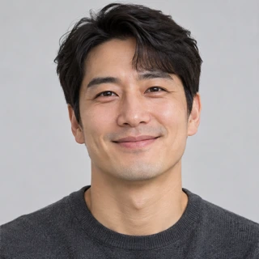

맞출수록 달라지는 양쪽 눈썹
어디까지 채워야 할지, 어떤 모양이 어울릴지 고민이라면.
YOUR FACE. YOUR BROW.
안산 임브로우 · 자연눈썹 / 콤보눈썹 / 섀도우눈썹
01 / BEFORE YOUR FIRST BROW
어디까지 채워야 할지, 어떤 모양이 어울릴지 고민이라면.
빈 곳이 신경 쓰이지만 눈썹만 진해 보일까 망설여진다면.
기존 잔흔이나 색 위에 다시 진행할 수 있을지 궁금하다면.
02 / THE WAY WE DESIGN
얼굴에 어울리는 눈썹은
평소의 나와도 잘 어울려야 하니까.
눈매와 전체적인 인상에 어울리는 모양
옷과 메이크업, 표현하고 싶은 분위기
모량과 좌우 차이, 기존 잔흔을 고려
FROM CONSULTATION TO DETAIL
첫 시술인지, 어떤 부분을 바꾸고 싶은지 상담합니다.
모양과 모량, 좌우 차이와 기존 잔흔을 확인합니다.
자연눈썹·콤보눈썹·섀도우눈썹 중 상태와 원하는 느낌에 맞춰 상담합니다.
03 / REAL WORK
04 / BEFORE YOU DECIDE
눈썹 기법은 피부 타입, 눈썹 모량, 기존 잔흔, 평소 메이크업 스타일 등을 종합적으로 고려하여 결정합니다.
원하는 디자인도 중요하지만, 피부에 적합한 기법을 선택해야 자연스러운 표현과 안정적인 착색을 기대할 수 있습니다.
임브로우는 1:1 상담을 통해 고객님께 가장 적합한 디자인과 기법을 제안해 드립니다.
기존 눈썹문신 잔흔이 남아 있어도 시술은 가능하지만, 잔흔의 색상, 농도, 깊이, 기존 디자인의 형태 및 피부 상태에 따라 시술 가능 여부와 적합한 기법이 달라질 수 있습니다.
잔흔의 상태에 따라 커버업 시술이 가능하며, 기존 색소가 지나치게 진하거나 디자인 교정에 제약이 있는 경우에는 레이저 제거를 우선 권장드릴 수 있습니다.
임브로우는 기존 잔흔과 피부 상태를 면밀히 확인한 후, 무리한 커버업보다는 자연스러운 색상과 디자인의 조화를 고려한 맞춤 시술을 진행합니다.
정확한 시술 가능 여부는 현재 눈썹 사진을 카카오톡으로 보내 먼저 상담을 통해 안내해 드립니다.
평소 옷과 메이크업 스타일, 원하는 인상을 함께 이야기해 주세요. 기존 눈썹을 고려한 디자인을 상담합니다. 결과와 색감은 개인마다 다를 수 있습니다.
눈썹 시술에는 리터치 1회가 포함됩니다. 리터치 방문 시기와 세부 조건은 예약 상담에서 확인해 주세요. 시술 후 6개월 이내 재방문 시 50% 할인으로 안내드립니다. 적용 대상과 기준 금액은 상담에서 함께 확인해 주세요.
느끼는 정도와 회복 과정에는 개인차가 있습니다. 중요한 일정, 피부 상태, 걱정되는 부분을 예약 전에 알려주시고 시술 및 관리 안내를 확인해 주세요.
WORDS FROM OUR CLIENTS
임브로우를 경험한 고객님이 직접 남겨주신 이야기.
그동안 안산눈썹 잘하는 곳 찾아다니며 유목민 생활만 수년째 했는데 드디어 여기에 정착합니다! 원장님 손길이 정말 야무지시고 디테일한 부분까지 놓치지 않고 잡아주세요~ 시술 도구도 깨끗하게 관리되는 게 눈에 보여서 위생적으로도 안심됐고, 분위기도 편안해서 시간 가는 줄 몰라요 ㅎㅎ 지인들한테도 벌써 소문내는 중입니다!
중앙역 2번 출구에서 가까워서 퇴근길에 들렀는데 위치도 너무 좋네요~ 예전에 타 샵에서 했던 잔흔이 남아있어서 걱정 많았는데, 찰떡같이 커버해 주셔서 기대 이상으로 만족스러운 결과 나왔습니다! 짱구처럼 짙어지는 거 전혀 없고 본래 내 눈썹처럼 자연스러워서 거울 볼 때마다 기분 좋아요 ㅋㅋㅋ 탈각 관리 방법도 친절하게 알려주셔서 잘 유지해 보려고요!

원하는 스타일이 명확하지 않아서 그냥 알아서 예쁘게 해달라고 부탁드렸는데, 눈매까지 고려해서 꼼꼼한 상담 진행해 주시더라고요! 중간중간 거울 보면서 디테일하게 해 주시는 세심함에 완전 반했습니다! 제 요청사항 다 반영해 주시고 설명도 친절하게 잘 해주셔서 받는 내내 마음이 너무 편했어요 ㅎㅎ
친구 추천으로 방문했는데 왜 다들 극찬했는지 바로 이해했어요! 한 땀 한 땀 결 살려서 진행해 주시는 꼼꼼한 시술 덕분에 짱구 될 걱정 전혀 없이 엄청 자연스럽게 완성됐습니다 ㅎㅎ 통증도 생각했던 것보다 훨씬 적어서 잠깐 졸다 보니 끝나있더라고요 ㅋㅋㅋ 탈각 후가 벌써 기대됩니다~ 주차도 근처에 편하게 할 수 있어서 여러모로 대만족이었어요!
제공된 실제 고객 후기 원문입니다. 시술 경험과 결과에는 개인차가 있습니다.
인물 사진은 후기 작성자와 무관한 연출 이미지입니다.
05 / PRICE & BOOKING
12만원부터
자연눈썹 기준 · 기법별 상세 금액은 상담 시 안내
기법별 금액, 이벤트 적용 및 리터치 세부 조건은 상담에서 안내드립니다.
06 / OUR STUDIO
LET’S FIND YOUR BROW.
지금 눈썹 사진 한 장만 보내주세요.
가능한 시술 방법부터 진행 과정까지
차근차근 안내해 드리겠습니다.